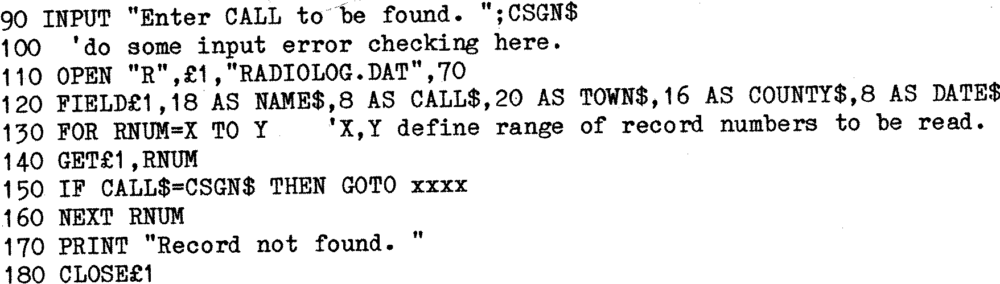

To Read and then Write a Random file the steps are as follows :
- OPEN the file
- Declare the Fields
- GET the required Record from Disk, if records already exist, or INPUT the
necessary data and build the record.
- Process the Fields
- PUT the record onto Disk.
- Repeat 3 to 6 until all done
- CLOSE the File
e.g.

| Line 110 | – | OPEN’s the file, declares it as RANDOM, and describes it as File
£1 until it is closed. The name of the Data file to be known as
File £1 is RADIOLOG.DAT and it uses Records of 70 bytes. |
| Line 120 | – | Sets up the FIELDS for file £1. Each Field is given a Variable
name and its length is set. |
| Line 140 | – | GET’s each Record in turn from the Disk until the search either
succeeds or fails altogether. |
| Line 150 | – | Looks for match between INPUT data and Disk record data. (N.B. in
this simplified example, Line 150 will probably fail to work since
“G30CB” does NOT equal “G30CB “. To work correctly, the trailing
blanks would have to be removed, or the INPUT callsign padded
out to 8 characters with blanks. |
| Line 160 | – | Continues looping until record found, or all done. |
| Line 170 | – | Prints appropriate message. |
| Line 180 | – | CLOSEs the file. |
FIELDS
Although it is possible to use the Data in the Fields directly, as in
line 150 above, it is normal practice to ‘move’ the Data out of the Field
variable into some other variable for processing. There are several reasons
for this:–
- The Field data will contain leading or trailing blanks which can lead to
unreliable results when Processing or Printing Data.
- Numeric data is stored in Fields as Strings. It must be converted back to
numeric form for calculations.
- Integers are stored as 2 Byte Fields, Single Precision as 4 Bytes, Double
Precision as 8 Bytes.
- It is often convenient to have the origional Field in uncorrupted form
during processing.